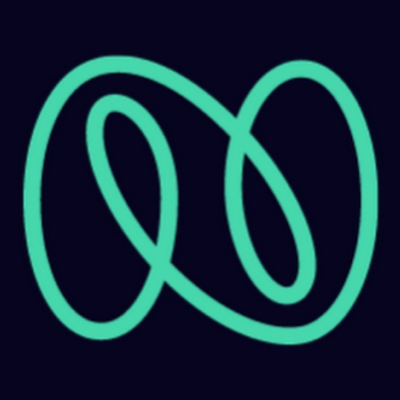

Shikhar Kumar
Software Engineer
Computer Science graduate student at UC Riverside with a strong interest in algorithms, cloud computing, and machine learning. I enjoy designing systems that are both intelligent and scalable.
Experience
My journey in software engineering.
- Designed an AI-powered course scheduling system that enabled UCR students to automatically select courses based on graduation requirements and personal preferences through an intelligent chatbot.
- Engineered the backend using Google Agent Development Kit (ADK), leveraging multiple agents for specialized tasks and exposing services via a FastAPI server to ensure scalability and modularity.
- Developed a modern frontend with Firebase Studio AI, featuring a split interface with an interactive calendar view on the left for a responsive chatbot panel on the right for real-time interaction.

- Developed and maintained real-time data publishers in .NET Core, deployed as AWS Lambda functions, to synchronize microservices and ensure consistency across different systems.
- Designed and optimized Oracle 18c database components (tables, stored procedures, triggers), enhancing query performance, maintaining data integrity, and meeting defined system SLOs.
- Built and configured AWS CI/CD pipelines using Terraform, automating deployments, reducing release times by ~20%, and streamlining development workflows.
Projects
A selection of projects I've worked on, showcasing my skills and experience.
- Built a search engine over 100K+ Reddit posts by crawling data with PRAW API and indexing with PyLucene.
- Designed a Flask web app for querying and displaying results with sub-second response times.
- Conducted sentiment analysis on 50K+ IMDB reviews using Apache Spark.
- Built a Flask web application with real-time querying and visualization, backed by a PostgreSQL database in Docker.
- Built a personal portfolio web application using React.js and Next.js, using from Firebase Studio AI.
- Configured GitHub Pages for deployment and automated the hosting process.
- Developed a course scheduling application for UCR students with chatbot logic in Google ADK, exposed via FastAPI.
- Integrated into a React frontend with a dynamic calendar view for interactive schedule management.
Education
My academic background and qualifications.
- Design and Analysis of Algorithms
- Artificial Intelligence
- Machine Learning
- Distributed Systems
- Advanced Database Management Systems
- Data Structures & Algorithms
- Object-Oriented Techniques
- Operating Systems
- Web Technology
- Software Engineering
Skills
The technologies and tools I work with.
Achievements & Awards
A selection of my recognitions and accomplishments.
Recognized quarterly as the most impactful software engineer on the team.
Awarded a fellowship for strong academic performance and potential in computer science.
Conducted monthly mentorship sessions to guide junior engineers in best practices and project work.
Hired twice for effectively grading "CS141: Intermediate Data Structures and Algorithms", ensuring precise evaluation of assignments, quizzes, and exams.
Recommendations
What others have to say about my work and collaboration.
"I highly recommend Shikhar for any technical role due to his strong technical, collaborative, and communication skills. His dedication is evident as he frequently works outside regular hours to enhance his knowledge and apply it effectively during work hours. Shikhar is an excellent team player."
Meenal Goyal
Technology Lead, Nagarro
"I highly recommend Shikhar for any development role. He possesses extensive project knowledge and was instrumental in helping QAs understand the actual testing requirements. Shikhar is very approachable and open to any sort of discussion, a testament to his excellent teamwork skills."
Jagjeet Singh
QA Principal Engineer, Nagarro
"One standout quality I observed in Shikhar is his relentless drive for improvement and his openness to constructive feedback—an invaluable trait in software engineering. He consistently introduced new ideas and strategies that enhanced our team's performance. Shikhar went above and beyond to support his teammates."
Aman Singh Parihar
Staff Engineer, Nagarro
Let's Connect
I'm always open to discussing new projects, creative ideas, or opportunities to be part of an amazing team. Whether you have a question or just want to say hi, I'll do my best to get back to you!